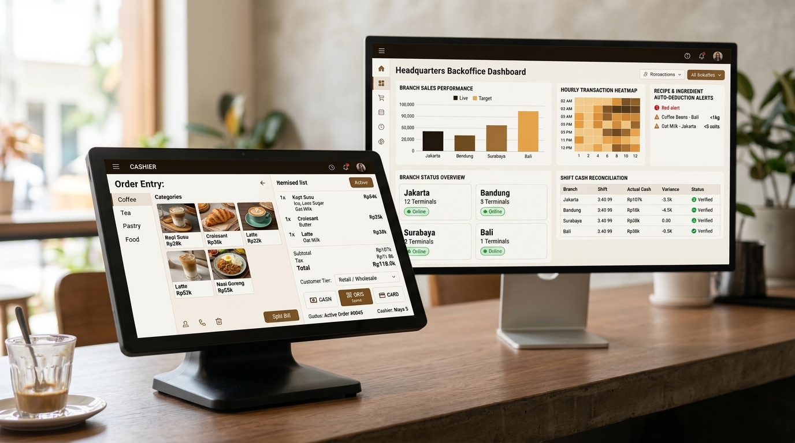

Kasir & stok gudang tidak sinkron
Sistem Kasir (POS)Penjualan cabang belum otomatis memotong stok dan masih harus direkap manual setiap malam.
Setiap usaha punya alur operasional yang berbeda. Banyak bisnis menghubungi kami saat pencatatan manual mulai kewalahan mengikuti pertumbuhan transaksi—sementara aplikasi siap pakai di pasaran terlalu kaku untuk menyesuaikan kebutuhan di lapangan.

Saat transaksi bertambah, pencatatan manual dan file yang terpisah mulai menyulitkan kontrol harian.
Penjualan cabang belum otomatis memotong stok dan masih harus direkap manual setiap malam.
Barang masuk, PO supplier, dan bahan produksi tercatat terpisah sehingga sisa stok serta HPP tidak akurat.
Data tersebar di banyak file Excel, membuat penagihan piutang dan tutup buku bulanan memakan waktu berhari-hari.
Sistem ERP berbasis web yang membantu perusahaan memantau posisi stok secara akurat, mengelola surat pesanan (PO), serta menghitung pemakaian bahan baku produksi secara otomatis.
Sistem POS dan Backoffice untuk jaringan retail, grosir, dan F&B. Setiap transaksi langsung memotong stok bahan/SKU cabang, mendukung harga bertingkat (Retail/Grosir), dan menyajikan analitik penjualan antar-cabang secara langsung.


Dirancang untuk merapikan administrasi internal perusahaan: mulai dari laporan Laba-Rugi, pelacakan umur piutang (AR Aging), anggaran divisi, hingga otomasi rekap absensi dan payroll bulanan.
Pengembangan dilakukan bertahap dan didampingi langsung hingga tim Anda terbiasa menggunakannya.
Tentang Seka Yasa →Memetakan kendala paling mendesak di lapangan agar sistem yang dibangun langsung tepat sasaran.
Mulai dari modul yang paling dibutuhkan dengan tampilan sederhana yang cepat dipahami staf.
Membantu migrasi data awal, melatih admin di lapangan, dan mendampingi saat sistem berjalan.
Ceritakan kondisi pencatatan usaha Anda saat ini. Kami melayani diskusi online maupun pertemuan langsung di Surabaya.
Hubungi & Konsultasi via WhatsApp →